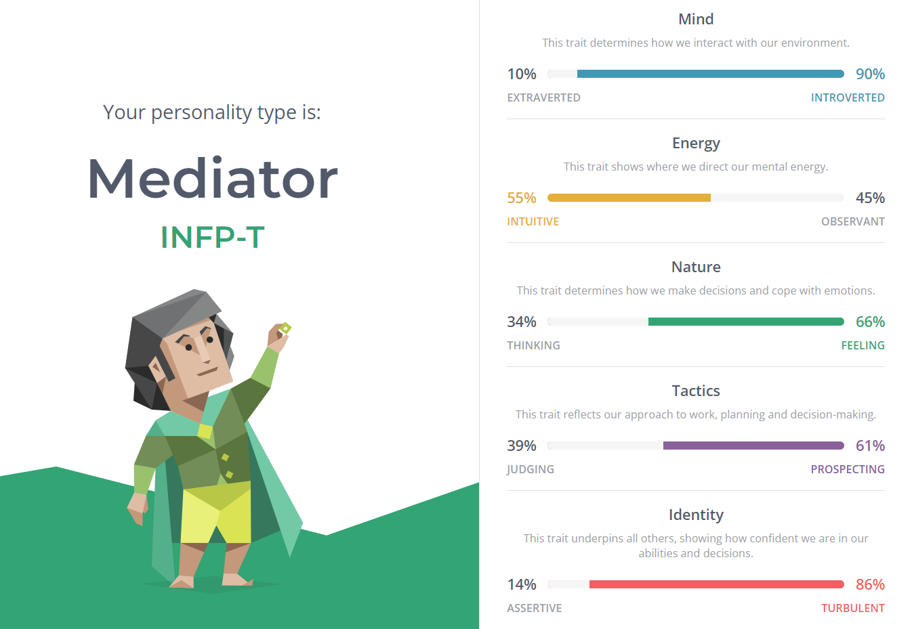

My Profile
Personal Info
Name: Danny Nguyen
Student number: s3903974
Email: s3903974@student.rmit.edu.au
Nationality:Australia
Education: Studying Bachelor of IT
Languages spoken: English and Vietnamese
Hobby: Games
Interest in IT
What is your interest in IT?
My main interest for studying IT is how flexible and diverse it is. IT always seemed to be a good baseline as it has a multitude of other routes to specialise in such as data analysis, cybersecurity, networking, software development, etc. I did not have an exact sort of course I wanted to focus and hope that by studying IT I will still have a variety of options to choose from while I determine what I want to do.
Was there a particular event?
No, there wasn’t an event or person that made me want to do IT. I just liked having pathways and options to follow.
Why choose to come to RMIT?
I chose to come to RMIT mostly due to location. Having the university close to the CBD is honestly a blessing. If I have to go on campus whether to study or deal with an issue, not having to travel an hour or two through transit is really convenient.
What do you expect to learn during your studies?
I don’t have many expectations on what I want to learn during my studies. I was mostly hoping to just learn a variety of skillsets and how to apply them so that later down the line once I figure out what I want to do, I’ll have the skills for them.
Ideal Job
Job Description
I didn’t have a specific company that I wanted to work at but I thought the idea of being a data analyst would be an interesting endeavour. A data analyst is someone who can gather and interpret data to solve a problem. I like the idea of being able to condense and manipulate data in such a way that it becomes understandable and usable.
Skills and Qualifications Required
Communication, Problem Solving, Data Visualisation, Teamwork, An understanding of software and languages
Skills and Qualifications That I Have
I think that my only skillset that I have currently is my ability to problem solve.
Plans
When it comes to developing a better understanding in data visualisation and software, I plan to attend more classes that resolve around those topics and possibly do my own research. Communication and teamwork are more important skillsets that will have applications outside of my ideal job. I think the only way for me to work on these skills is just through practise and being more comfortable in speaking up.
Personal Profile
Myers-Briggs Test
Learning Style Test
Visual
Big5 Test

What do the results mean?
The results of the tests show that I lean heavily towards the side of introversion and that I prefer to learn through reading and writing. I feel that the results are fairly apt in describing me as I do prefer working on my own and have had troubles working in group environments. However I wonder on the legitimacy of the tests as I did have varying results for the learning style test and categorising ones personality to 16 types doesn’t seem right. Also, as much as I prefer working by myself, working with others is an important skillset that I need to develop when working in groups.
Team Composition
When it comes to how I would work in and what I want from forming a team, the thing that I primarily want is to not be in a leadership role. I would probably struggle to provide concise instructions and directions to the rest of the group which in turn would make us work less efficiently. As long as I don’t have to be the leader in the group, I should be able to work as normal.
Project Idea
For my project I would like to try and develop a game. Playing games is my main hobby and I think it would be interesting what goes into developing one. It would be a fairly simplistic game which might make it kind of boring to create but I still think that there’s things we could learn from making one. My main interest is that I like playing games myself and I want to know what goes into making one. The game could make for good practise when it comes to using and understanding the software and an interesting way to express ones own creativity.
So, games have always been a mixture of multiple moving parts which make it a whole. There’s always a variety of aspects such as the way the game controls, determining the primary game loop, how the visuals look, etc. Since there are so many pieces that make up a game it always for a lot of skill expression and creativity. It provides a creative outlet for what an individual or a team finds enjoyable to play and allows them to hone their own skills when working on software to make these games work. So what kind of features do I want this game to have or what sort of game will it be? To be honest I don’t have a particular sort of game that I wanted to create. I mostly wanted to try a project which allows the team to be as creative as they can while also finding ways to practise their own technical skills.
The tools would have to comprise of a free game engine of sorts (e.g. Unity) and probably a programming language. An art and music software would be needed as well if we wanted to create our own, otherwise public domain assets should work. Skills required would be an understanding of the game engine, knowing how to use the software and having an inventive way to create and deal with issues. If the project is successful the hope is that there is a functional game that comes out of it, while the team has developed their skillsets.